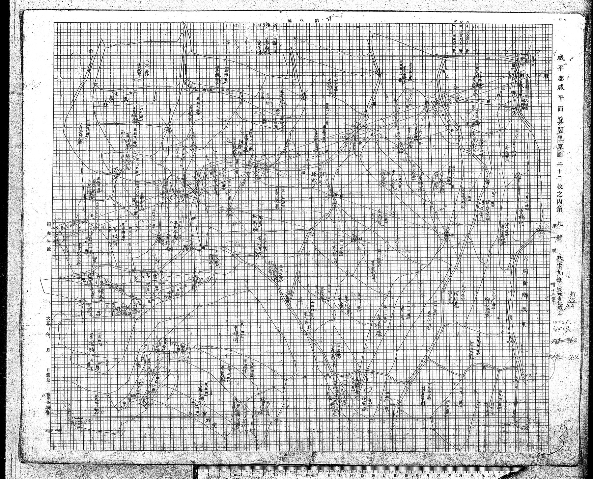
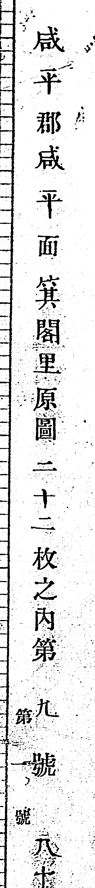
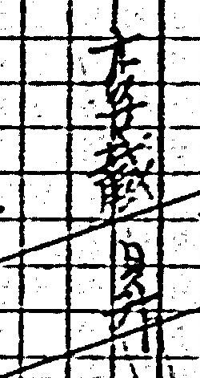

지도에 남은 이름 — 기각리 원도 속 ‘李載昇’
함평 이동범가, 128년의 인연 | 제9편
지난 8편까지는 고조부 석암 이동범 선생부터 저희 할머니 신문란 여사까지, 집안 사람들을 한 분씩 소개했습니다. 이번 편에서는 잠시 사람에게서 눈을 돌려, 그분들이 살았던 땅과 공간을 들여다보려 합니다.
출발점은 오래된 지도 한 장입니다. 모눈이 빽빽하게 그어진 종이 위에 필지의 경계선과 번호가 표시되어 있고, 곳곳에는 사람의 이름도 붓글씨로 적혀 있는 지도입니다.
1. 모눈종이 위의 함평

이런 지도를 지적원도(地籍原圖)라고 부릅니다. 일제강점기 토지조사사업 때 마을 단위로 땅을 측량해 필지마다 경계와 번호를 그려 넣은 원본 지도입니다. 저희가 확보한 사본은 파일 기록상 1915년 자료로 정리되어 있지만, 실제 작성 연도는 원면에서 다시 확인하고 있습니다.
지도의 오른쪽 가장자리에는 이 지도가 무엇인지 알려 주는 표제가 세로로 적혀 있습니다. ‘咸平郡咸平面箕閣里原圖 二十二枚之內 第九號’, 곧 함평군 함평면 기각리 원도 스물두 장 가운데 제9호라는 뜻입니다.

2. ‘李載昇’ 세 글자
빼곡한 필지 사이를 한 칸씩 따라가다 보면, 낯익은 이름이 눈에 들어옵니다. 한 필지 안에 세로로 적힌 ‘李載昇’, 6편에서 소개한 증조부 춘강 이재승 선생의 이름입니다.

100년 넘은 지도에서 증조부의 이름을 직접 찾았을 때의 기분은 말로 다 하기 어렵습니다. 신문 기사나 족보에서 보던 이름과는 또 다르게, 그분이 살아가셨던 시대의 함평 지도 위에서 이름을 발견한 느낌이었습니다.
다만 원도에 이름이 적혀 있다는 것과 그 땅의 소유 관계 전체가 밝혀졌다는 것은 다른 이야기입니다. 소유권과 그 변동은 토지조사부나 토지대장 같은 별도의 장부로 확인해야 하고, 이 지도의 필지가 지금의 어느 땅인지도 아직 대조하지 않았습니다.
3. 우리가 보고 있던 문서
이번 편을 준비하면서 바로잡은 것도 있습니다. 저희는 이 자료를 처음에 토지대장으로 정리해 두었는데, 원면을 다시 펼쳐 보니 장부가 아니라 지도, 곧 지적원도였습니다.
필지별로 이름을 붙여 저장해 둔 파일 두 개가 사실은 같은 제9호 원도를 담고 있다는 것도 확인했습니다. 그래서 파일 이름에 적어 둔 명의 가운데 원면에서 직접 확인되지 않은 것은 판단을 보류하고, 눈으로 읽어 확인한 이름만 이 글에 적기로 했습니다.
오래된 문서를 다룰 때는 무엇이 적혀 있는지만큼이나 내가 지금 어떤 종류의 문서를 보고 있는지가 중요하다는 것을, 이번에 다시 배웠습니다.
4. 100년 전 함평의 풍경
지도가 땅의 경계를 보여 준다면, 그 시절 함평의 모습은 사진이 보여 줍니다. 함평 지역사를 연구해 온 김희태 선생님은 1917년 『전남사진지』에 실린 함평읍 사진을 옛 지도와 시가도, 항공사진 등과 비교해 함평 읍내 공간이 어떻게 바뀌어 왔는지를 정리한 바 있습니다.
1917년은 5편에서 소개한 『매일신보』가 고조부를 ‘전남 명사’로 소개한 바로 그해입니다. 김희태 선생님은 이 함평읍 전경 사진의 왼쪽에 기각리, 오른쪽에 내교리가 자리한다고 설명합니다. 오래된 지도에 적혀 있던 기각리라는 지명이 옛 사진 속에서는 마을의 풍경으로 다시 나타나는 셈입니다. 다만 이것이 원도 속 특정 필지의 위치까지 밝혀 준다는 뜻은 아닙니다.
5. 무안까지 이어지는 기억
집안에는 함평뿐 아니라 이웃 무안에도 땅이 있었다는 이야기가 전합니다. 이 기억은 가족에게 전해 내려온 것으로, 관련 토지의 구체적인 위치와 소유 관계를 확인할 원자료는 아직 확보하지 못했습니다. 그래서 이 이야기는 지금 단계에서 확인된 사실이 아니라, 앞으로 찾아볼 조사 과제로 남겨 둡니다.
6. 남은 질문들
정리하면서 앞으로 확인할 질문도 분명해졌습니다. 기각리 원도의 정확한 작성 연도, 원도에 적힌 다른 가족 이름의 원면 판독, 토지조사부와의 대조, 그리고 무안 땅에 관한 원자료입니다.
지도 위의 이름 하나도, 눈으로 확인한 만큼만 적어 가려 합니다.
다음 편에서는 또 다른 기록 속 집안 이야기를 이어 가겠습니다.
백범김구기념관 공식 인터뷰
함께 보기
- 전체 기록 아카이브 https://lsaru23-ai.github.io/hp-db-archive/
- X @hp_db_archive https://x.com/hp_db_archive
- Threads @hp_db_archive https://www.threads.com/@hp_db_archive
지난 글
- 제1편: ‘이 진사’는 누구였나 — 백범 김구와 함평 이동범가
- 제2편: 보름을 머문 이유 — 1898년, 함평의 은신
- 제3편: 1946년 재회와 光明 — 김구가 다시 찾은 인연
- 제4편: 종가와 이재혁 가옥 — 두 집에 남은 128년
- 제5편: 석암 이동범 — ‘이 진사’의 생애
- 제6편: 춘강 이재승 — 종가를 이은 장남
- 제7편: 이상래 — 「光明」에 이름이 남은 손자
- 제8편: 신문란 — 1930년 무렵, 학교를 떠난 며느리
주요 참고자료
[1] 「咸平郡咸平面箕閣里原圖 二十二枚之內 第九號」, 지적원도 사본(파일 기록상 1915년, 작성 연도 확인 중).
[2] 김희태, 「100년 전의 함평 경관 1 — 1917년 함평읍과 공간의 변천」, 2016. 5. 27, https://kht1215.tistory.com/114
[3] 김희태, 「옛사진을 통해 보는 전남의 향토민속경관 — 『전남사진지』(1917년)를 중심으로」, 『남도민속연구』 36, 2018, 91~132쪽.
[4] 가족 전승 및 PAOS-HP 무안 토지 후속조사 기록(2026).
이 글은 원도에서 직접 판독한 내용과 집안의 전승을 구분해 작성했습니다. 본문에서는 개별 필지번호와 현재 위치를 특정하지 않았으며, 역사적 필지와 현행 지번의 대응은 추가 검증이 필요합니다.